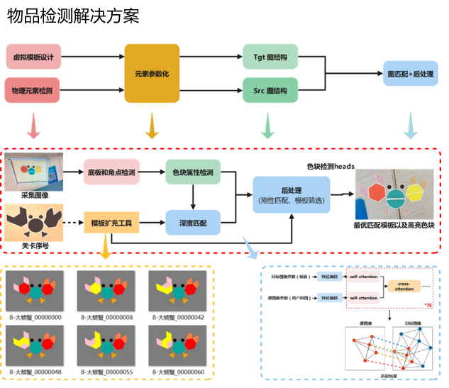

联系信息
Email: shawen@mail.ustc.edu.cn
Phone: +8618655053780
专业摘要
我是一名经验丰富的AI视觉算法工程师，擅长人脸和人体检测识别、手势识别、车辆与车牌检测识别等领域。在领先的AI科技公司担任算法团队的Leader，具有深厚的实战经验和丰富的产品落地经验,现在正智能座舱领域搬砖。
教育经历
- 中国科学技术大学（硕士） - 控制工程专业 - 2013年至2016年
- 安徽大学（本科） - 通信工程专业 - 2009年至2013年
工作经历
- 科大讯飞股份有限公司（合肥） - 算法工程师 - 2017年至今
- 中兴通讯股份有限公司（南京） - 算法工程师 - 2016年至2017年
业绩经历
- 车载智能座舱视觉DMS&OMS业务
- 2020年2月至今：作为核心研究算法团队的Leader，我成功领导了一支30余人的精英团队，实现从零到一的突破，构建起专业的智能座舱视觉算法团队，协同助力汽车事业部团队不仅在奇瑞、江铃、日产、阿维塔、赛力斯、长安、广汽等国内知名车厂完成了数十款车型的量产交付，还成功拓展至国际市场，实现了海外数十款车型的算法部署，展现了团队强大的研发实力和高效的项目执行能力。
- 初创期（2020年2月至2021年2月）：团队从零开始，着手开发驾驶员监控系统（DMS）。主要工作集中在自选的HiKey970开发板上，通过全流程演示，展示了纯CPU场景下的功能。借助QAT的8比特量化技术降低了算力需求，成功实现了DMS功能的稳定演示。
- 痛苦期（2021年3月至2022年2月）：团队面临了纯视觉无定点的挑战，无法独立生存。因此采取了两步走策略：一是绑定多模态进行销售以确保有落地成效，二是深入开发平台异构能力。这一年，团队在效果优化和引入部分OMS能力的同时，成功整合了安霸CV25、MT8666和高通8155(SNPE/HexagonNN)推理异构支持，并可进行演示。
- 稳定期（2022年3月至2023年2月）：感谢奇瑞的信任，经过多次演示和打磨，纯视觉方案终于可以独立运行，并获得了前三个量产项目的机会。整个团队逐渐稳定下来，经过深入打磨后，DMS的整体效果达到了业界领先水平，助力奇瑞从国内走向国际。
- 成长期（2023年3月至2024年2月）：基于奇瑞的基地和国际法规的要求，DMS技术随奇瑞出海，顺利通过了ADDW和DAAW相关认证。同时，还实现了OMS前三个量产项目的交付，并围绕奇瑞形成了批量化交付的经验。
- 爆发期（2024年3月至今）：奇瑞在高通8155平台上获得的多个量产和出海经验吸引了国内许多车厂的关注。团队陆续获得了江铃、日产、阿维塔、赛力斯、长安、广汽等车厂的合作机会。根据实际交付需求沿途积累了芯驰X9SP、联发科MT8675/MT8676和高通8295(QNN)异构的经验，实现了批量交付的能力。
- 视线追踪&手势识别业务
- 2019年6月至今：作为核心研究算法团队的Leader，我和我的团队开发出领先的注视感知与手势识别算法，并在业界率先推出眼神打字与凌空手写创新Demo，赢得政府及市民的高度赞誉。如今，我们的视线与手势技术已广泛应用于护眼及交互大屏产品中，展现出巨大的应用前景。
授权专利
专业技能
- 丰富的AI视觉感知相关产品任务落地经验
- 精通C++，具备架构师级别的代码开发能力
- 熟悉各种芯片NPU异构计算，包括高通系、周易系、RK系、MT系等
关键经验
- 人员管理-规模/复杂团队管理
- 扭转劣势-扭转局面
- 研发经验-产品研发经验
- 研发经验-多业务方向研发
- 开创新经验-从0到1
作品展示-解决方案示意

作品展示-视频Demo
视线交互-眼神打字
姿态行为-坐姿&学习行为
通用检测-创意拼图
视线交互-注视感知
智能座舱-DMS
智能座舱-OMS
视线交互-眼肌锻炼
人脸识别-门禁闸机